6. Instalación de un nuevo programa; "EPOPTES"
Nuestro Raspbian ya viene con bastantes programas listos para trabajar (posteriormente en otro capítulo los trataremos más en detalle), pero no así nuestro servidor, al que podremos instalar directamente desde Pinet algunos programas tan interesantes como el que os presentamos a continuación: EPOPTES.
Arrancamos pinet:7
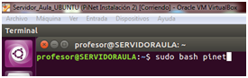
Vamos a _Install - Program _de nuestro Menú
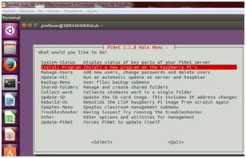
Aceptamos el mensaje de confirmación.
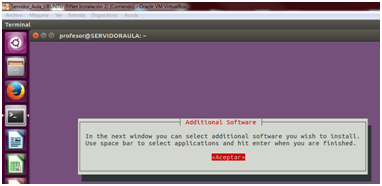
Marcamos el programa que nos interesa instalar (vemos como la pantalla es igual que la que obteníamos en la primera instalación de PiNet) y aceptamos.
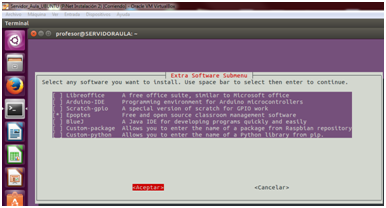
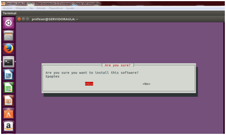
Aceptamos el mensaje de aviso y comenzará a instalar.
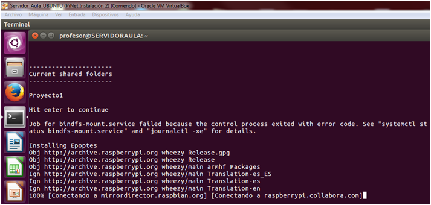
Vemos conforme avanza el proceso que crea una serie de carpetas compartidas que al reiniciar las Raspberry, creará y permitirán que sin modificar la Imagen de nuestra SD primaria, podamos utilizar el programa con todos nuestros terminales.
Una vez finalizado el proceso, si queremos usarlo tendremos que ir a Epoptes - Menu

Deberemos añadir un profesor al grupo "profesores".
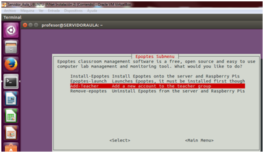
Lo cual nos permitirá que este usuario tenga acceso total a las opciones del servidor.
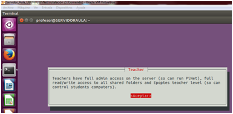
Nos aparecerá en la lista de ususarios y debermeos seleccionarlo. Desde aplicaciones de Ubuntu lo lanzamos
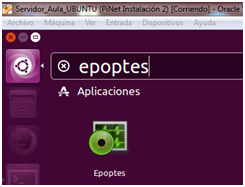
y en la ventana principal del programa podremos ver ya los equipos que ha detectado y que podremos pasar a utilizar, observar, "espiar"....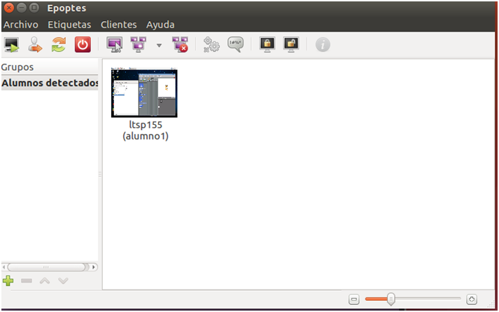
Así es como nos muestra la pantalla de uno de nuestros alumnos.
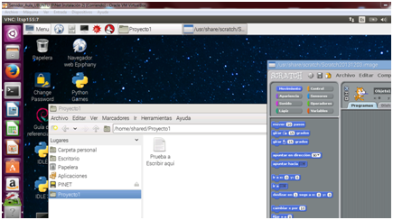
Para finalizar, cabe destacar que EPOPTES ofrece muchas funcionalidades; demostraciones en tiempo real de la realización de alguna tarea, mostar videos en la pantalla de nuestros alumnos, tomar el control de los equipos, bloquear - desbloquear sus pantallas, en definitiva nos permite dar una clase en nuestra aula de informática sin tener que ir equipo por equipo observando y ayudando a nuestro alumnado.
El uso de este programa supera los objetivos de este curso pero aquí os dejo uno de mis manuales favoritos para aprender las principales funcionalidades de este programa.Obviamente toda la parte de instalación que marca el tutorial no debemos hacerla puesto que acabamos de realizarla.
https://lihuen.linti.unlp.edu.ar/index.php/Epoptes
*/ TODAS LAS IMÁGENES UTILIZADAS EN EL PRESENTE MÓDULO HAN SIDO ELABORADAS POR EL AUTOR DEL CURSO.

Monta tu aula de informática con Raspberry Pi por Fernando Gasca Andreu bajo licencia Creative Commons Reconocimiento-NoComercial-CompartirIgual 4.0 Internacional License.